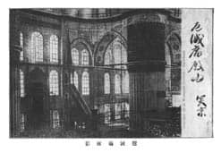

Resim: 9
Resmin üstünde: 厄蔑庙殿内突京, Sultanahmet Camii’nin içi, Türk başkenti
Resmin altında: 厄蔑庙拓影, Sultanahmet Camii’nin fotoğrafı.
Resim: 10
Resim üstünde: Tam olarak okunamamaktadır.
Resim altında: 王庙拓影, Sultanın camii fotoğrafı.